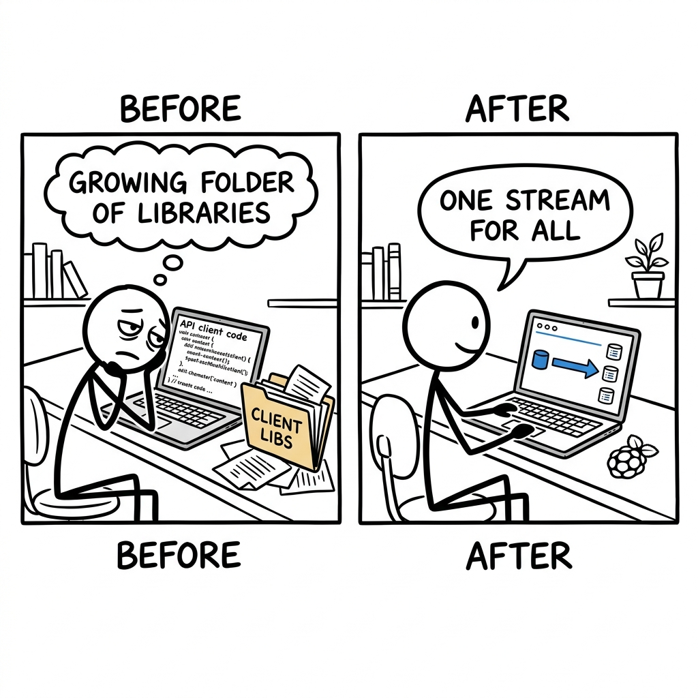

Devon, a software engineer, sighs, knowing they need to connect their new order processing service to three downstream inventory systems. Each connection means writing entirely new API client code, handling unique retry policies, and hoping a single system doesn't bog down the others, where the real competitor is a growing folder of hand-rolled communication libraries.

The trade it makes versus the dominant alternative.
What it gives up
- NATS sacrifices the massive, high-throughput batch processing capabilities that Apache Kafka excels at for large-scale data pipelines.
- It gives up the strict guarantees of ordered delivery across a high number of partitions that Kafka enforces by default.
- NATS's core Pub/Sub model is memory-first, meaning strict message durability isn't enabled by default and requires JetStream.
- It does not natively include the extensive ecosystem of deeply integrated stream processing tools (like Flink or Spark Streaming) that exist for Kafka.
What it gets in return
- NATS gains extreme simplicity in deployment and operation, functioning as a single binary with minimal external dependencies.
- It offers superior performance for real-time, low-latency messaging across various patterns (Pub/Sub, Request/Reply, Queues) in its core.
- NATS is exceptionally resource-efficient, enabling deployment on a wide spectrum of hardware, including tiny edge devices like a Raspberry Pi.
- It provides a more native and direct Request/Reply messaging pattern, which can be complex to implement efficiently in log-centric systems.
Kafka cannot simply "become simpler" or "run on a Raspberry Pi" without fundamentally overhauling its core architecture and JVM dependency. Its existing business model and value proposition are built on complex, high-throughput, horizontally scalable distributed systems designed for massive data ingestion and processing. Attempting to match NATS's simplicity and lightweight footprint would require abandoning its core engineering philosophy and rewriting significant portions of its codebase, alienating its established user base and destroying its architectural advantages in its primary market. Redis, while lightweight, is fundamentally a key-value store with streaming capabilities, and its single-threaded nature in core operations limits its ability to achieve NATS's high concurrency in diverse messaging patterns without significant architectural changes.
flowchart LR A["Complex distributed design"] --> B["Requires heavy resources"] B --> C["Cannot easily run on edge"] C --> D["NATS: Single Go binary"]
Four dimensions that actually split the field.
- Easy start: How simple it is to get a basic version running on one computer.
- Always saves messages: Whether it reliably saves your messages to disk, even if the system crashes.
- Tiny computer friendly: If it can run effectively on tiny computers like a Raspberry Pi or at the edge of a network.
- Many message styles: How many different ways you can send and receive messages, beyond just one-to-many broadcasts.
| Product | Easy start | Always saves messages | Tiny computer friendly | Many message styles |
|---|---|---|---|---|
| NATS (with JetStream) | Very EasyStarts as a single binary, no external dependencies needed for basic operation. | YesJetStream adds configurable file or memory-backed persistence with strong guarantees. | YesDesigned to run anywhere, from large clouds to a Raspberry Pi or other edge devices. | FullSupports Pub/Sub, Request/Reply, Queueing, and persistent streaming with JetStream. |
| Apache Kafka | HardRequires a complex distributed setup including Zookeeper or Kraft for metadata, and a JVM runtime. | YesCore design is a fault-tolerant, replicated distributed commit log for high durability. | NoIts JVM overhead and distributed nature make it unsuitable for small, resource-constrained devices. | LimitedPrimarily an append-only commit log; other patterns like Request/Reply are typically built as layers on top. |
| RabbitMQ | MediumRuns on the Erlang runtime; setting up a single node is straightforward, but clustering is more involved. | YesMessages can be persisted to disk, and various acknowledgment mechanisms ensure reliable delivery. | PartialCan run on smaller servers than Kafka, but its Erlang runtime still has a noticeable footprint compared to NATS's single Go binary. | FullSupports a wide range of AMQP messaging patterns including fanout, topics, direct exchanges, and remote procedure calls (RPC). |
| Redis Streams | Very EasyA single Redis instance can run with minimal setup, often embedded within existing Redis deployments. | YesOffers append-only log persistence with configurable RDB snapshots or AOF journaling. | YesA single Redis server is lightweight and can run on modest hardware or embedded systems. | LimitedDesigned around a log-based stream with native consumer groups, but other advanced messaging patterns require custom application logic. |
Features hiding in the codebase that the README doesn't advertise. Each one is a bet about where the product is going.
- 1Advanced Message Batchingserver/jetstream_batching.go (atomicBatch, fastBatch types, newAtomicBatch, newFastBatch functions)The product is prioritizing high-throughput, reliable messaging patterns, allowing applications to optimize network and disk I/O by sending messages in efficient batches, crucial for performance-sensitive use cases.
- 2Hardware-Backed Encryption (TPM)server/jetstream.go (initJetStreamEncryption, tpm.LoadJetStreamEncryptionKeyFromTPM)NATS is targeting highly secure, enterprise-grade environments where data-at-rest encryption keys require protection beyond software-only solutions, leveraging hardware security modules like TPMs.
- 3In-Service Cluster Management (Migration, Reassignment)server/jetstream_cluster.go (runStreamMigration, remapStreamAssignment, processRemovePeer, selectScaleDownPeers functions)The system is designed for extreme operational resilience and elasticity, enabling seamless scaling, rebalancing, and self-healing of distributed JetStream resources without manual intervention or downtime.
- 4Granular Resource Tiers per Accountserver/jetstream.go (JetStreamAccountLimits, JetStreamTier, jsaUsage types)NATS is betting on multi-tenant or departmental usage patterns where fine-grained control over resource allocation (memory, storage, streams, consumers) per account is essential for fair usage and preventing resource starvation.
- 5Runtime Protocol Negotiation & Dynamic Info Updatesserver/server.go (RouteProtoInfo, ClientProtoInfo constants, sendAsyncInfoToClients function)The product aims for maximum client and server compatibility across versions and dynamic adaptability in network topology, allowing older clients/servers to connect while enabling newer features (like LDM awareness, updated URLs) to be communicated on the fly.
- 6Smart Internal Traffic Compressionserver/server.go (selectS2AutoModeBasedOnRTT function, CompressionS2Auto mode), server/jetstream_cluster.go (s2.Encode, s2.Decode calls)NATS is optimizing for bandwidth-constrained or high-latency clustered deployments, using adaptive compression for internal server-to-server communication, intelligently balancing CPU usage with network throughput based on RTT.
- 7Custom Internal Request Queues for Backpressureserver/server.go (jsAPIRoutedReqs, delayedAPIResponses, ipQueue type and usage)NATS prioritizes stability and graceful degradation under heavy load by implementing its own internal queuing mechanisms, preventing API handler goroutines from blocking and propagating backpressure, ensuring the control plane remains responsive even during spikes.
Features every competitor ships that this codebase deliberately doesn't. Strategy is choosing what not to do.
- 1No Rich User-Facing DashboardsMonitoring endpoints like /varz, /connz, /jsz return raw JSON or text; no
html/templateor asset rendering logic for full dashboards.Commits to providing low-level, API-first monitoring data that users can integrate into their existing observability stacks (Grafana, Prometheus). Avoids the significant development and maintenance burden of a built-in, opinionated UI. Risk: Higher barrier to entry for users who prefer out-of-the-box visualization. - 2No Generic Message Transformation PipelinesStream configuration (StreamConfig in server/jetstream.go) offers fixed options like
MirrorandSourcebut noTransformfield for arbitrary, user-defined processing logic on messages.Stays focused on high-performance, low-latency message delivery without adding the overhead and security concerns of a custom processing engine. Delegates complex ETL and transformation tasks to external streaming processors or client applications. Risk: Users might choose platforms with integrated FaaS or stream processing capabilities for end-to-end data pipelines. - 3No Dynamic Role-Based Access Control on DataAuthorization (
--user,--pass,--auth) and account-level imports/exports are present, but there's noSubjectACLorMessagePolicystructure for granular read/write permissions based on arbitrary roles or conditions beyond simple subject patterns.Simplifies the authorization model, focusing on account-level trust and delegation. Avoids the exponential complexity of fine-grained, dynamic access control lists that require deep inspection of message content or complex authorization rules per subject. Risk: May not meet the granular security requirements of highly regulated or complex multi-tenant applications. - 4No External Orchestration IntegrationLame Duck Mode and internal clustering provide self-management, but there are no explicit hooks or APIs (e.g., to Kubernetes HPA, cloud autoscalers, or external scheduling tools) to trigger automatic scaling, rebalancing, or maintenance events based on external metrics or schedules.Keeps the core server lean and focused on messaging, relying on operators or external systems to drive infrastructure-level changes. Avoids coupling with specific orchestration platforms, increasing portability. Risk: Requires more manual integration effort to achieve full automation in dynamic cloud environments.
- 5No Dynamic Plugin/Extension SystemThe entire codebase is Go, with no visible interfaces or mechanisms for loading external modules (e.g., Lua, WASM, shared libraries) at runtime to extend server functionality without recompilation.Ensures maximum performance, type safety, and security by keeping all core logic within the compiled Go binary. Avoids the performance overhead, security vulnerabilities, and complexity of managing a plugin runtime and API stability. Risk: Limits extensibility for users who want to customize server behavior without contributing directly to the core codebase.